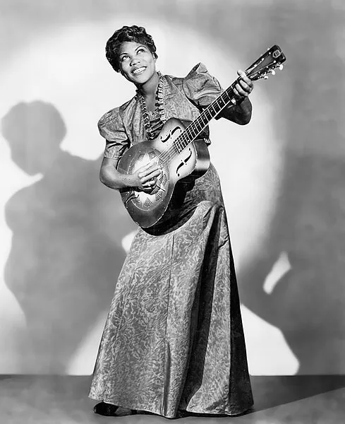

Apesar de que os homens são mais frequentemente lembrados quando falamos de rock, as mulheres tiveram papel importante na construção desse gênero.
Começando com Sister Rosetta Tharpe, uma cantora e guitarrista estadunidense. Rosetta Tharpe, uma mulher negra, começou a mesclar o rock com o gospel e blues antes mesmo da década de 1950, ainda em 1938. Rosetta Tharpe é considerada a mãe do rock por ter sido revolucionária ao unir as letras gospel e o ritmo do violão elétrico da época.

Ícone do rock psicodélico, Janis Joplin marcou uma geração com sua música e seu estilo. Com uma versão menos estampada do estilo hippie, com uma pegada mais boêmia, com as roupas coloridas, bagunçadas, cheias de acessórios e camadas. Óculos redondo, toucas e casacos de pelo e coletes de crochê marcaram a imagem de Joplin. Assim como influenciou o rock no curto tempo de carreira, também foi um marco na moda, com um estilo que é copiado até hoje e é referência quando se fala da moda nos anos 1960. Suas roupas combinavam com sua personalidade: divertida, ousada, à frente de seu tempo. E assim ela inspirou gerações de mulheres dentro e fora do rock.